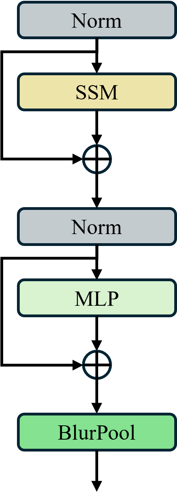
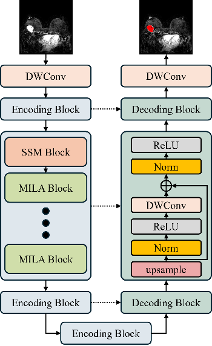
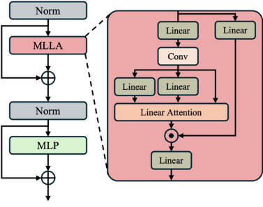

State space block


The block normalizes its input and mixes features with a state space model and an MLP. BlurPool filters the result before downsampling to limit aliasing.
AIxMHC 2025
¹ National Ilan University² Asia American International Academy³ National Cheng Kung University
SSIU-Net starts with a depthwise convolution on a breast MRI image. At each encoder stage, a state space block downsamples the features and linear attention relates distant locations. The decoder upsamples the features to produce a tumor mask.

Method
The encoder alternates between reducing spatial resolution and learning relationships across the image. The state space and linear attention blocks play different roles in that sequence.

The block normalizes its input and mixes features with a state space model and an MLP. BlurPool filters the result before downsampling to limit aliasing.

The MILA block uses Mamba-like linear attention to relate spatially distant features. A subsequent MLP mixes information across channels, with residual connections around both steps.
Results
SSIU-Net achieved 84.73% Dice overlap on BreastDM. Table I compares the result with 80.1% for a fine-tuned U-Net. The paper reports an 80% training and 20% testing split.
| Method | Dice (%) ↑ | PPV (%) ↑ | Recall (%) ↑ |
|---|---|---|---|
| PSPNet | 72.7 | 72.9 | 72.5 |
| UNeXt | 70.1 | 86.3 | 59.0 |
| U-Net (fine-tuned) | 80.1 | — | — |
| SSIU-Net | 84.73 | 90.73 | 87.95 |
PPV measures precision over predicted tumor pixels. Recall measures the fraction of reference tumor pixels recovered. A dash indicates that the paper did not report the metric.
Code & citation
See the project repository for the PyTorch implementation and instructions.
@INPROCEEDINGS{11326852,
author={Chen, Chi-An and Shen, Sean Chuan-En and Ke, Liang-Ying and Hsia, Chih-Hsien},
booktitle={2025 Second International Conference on Artificial Intelligence for Medicine, Health and Care (AIxMHC)},
title={A State Space-Inspired U-Net with Linear Attention for Breast Tumor Segmentation},
year={2025},
pages={264-265},
doi={10.1109/AIxMHC65380.2025.00057}}